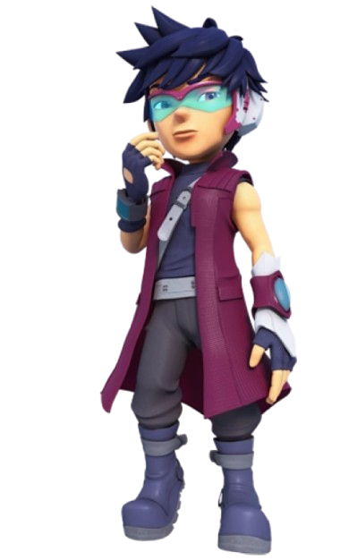
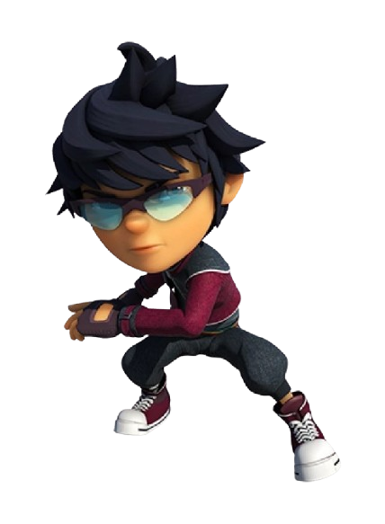
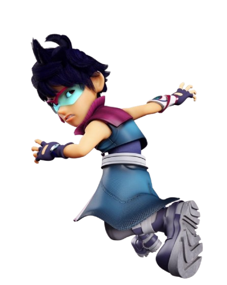
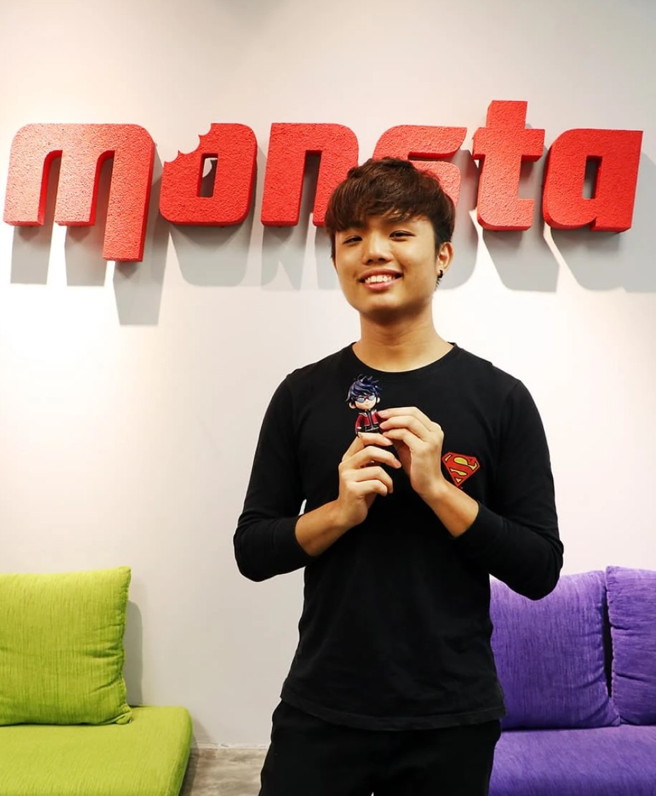

Fang is a formidable member of the team, best known for his mastery over shadow manipulation. This unique ability allows him to conjure various weapons, tactical tools, and even autonomous clones to outmaneuver his opponents during battle. His combat style is characterized by a cool, calm, and highly disciplined approach, reflecting his intense dedication to refining his skills.
While Fang often presents a distant, competitive, and somewhat mysterious persona, this exterior hides a deeply loyal heart. He shares an unbreakable bond with his teammates, and despite his occasional rivalry with BoBoiBoy, he remains a steadfast ally who prioritizes the safety of his friends above all else. His journey from a reluctant newcomer to a reliable hero demonstrates his growth as both a warrior and a companion. Whether he is engaging in high-stakes galactic combat or navigating the complexities of his personal relationships, Fang’s presence provides both a tactical advantage and a sense of security to the group. He is an essential protector whose strength and unwavering commitment to his team prove that his shadow powers are matched only by his true dedication as a friend.

CHARACTER REVOLUTION

Original Series Look
This reflects Fang's classic appearance from the early BoBoiBoy series, showcasing his signature purple streak hair and school uniform style as BoBoiBoy's main rival.

Galaxy Series Look
This represents his updated BoBoiBoy Galaxy appearance, featuring a sleek space-agent suit and refined shadow techniques that match his role as an elite member of TAPOPS.
VOICE ACTOR

Wong Wai Kay is a distinguished voice actor who has become synonymous with the character of Fang in the highly acclaimed Malaysian animated franchise, BoBoiBoy. His vocal performance serves as a vital component of the character's enduring appeal, shaping how fans perceive Fang's complex personality across multiple seasons of the television series, BoBoiBoy: The Movie, and BoBoiBoy Movie 2.
A defining characteristic of Wong Wai Kay's contribution is his versatility; he has successfully provided the voice for Fang in both the Malay and English versions of the franchise. This dual-language commitment has been instrumental in bridging cultural gaps, allowing the character's distinct blend of cool competitiveness, mysterious allure, and unwavering loyalty to resonate with a diverse, international audience. Through his precise vocal delivery, Wong Wai Kay manages to convey the nuances of Fang's journey—from a guarded, competitive rival to a steadfast and integral member of the team—ensuring that the character remains both relatable and compelling for viewers of all ages. His dedication to the role has cemented Fang's status as a fan-favorite, making his performance a fundamental element in the global success and emotional resonance of the BoBoiBoy universe.
SIGNATURE MOVES

FANG STRENGTH
Fang is an elite TAPOPS agent and shadow master capable of executing advanced shadow manipulation, combat agility, and tactical leadership. His primary function is offensive combat and reconnaissance, but he possesses immense versatility.